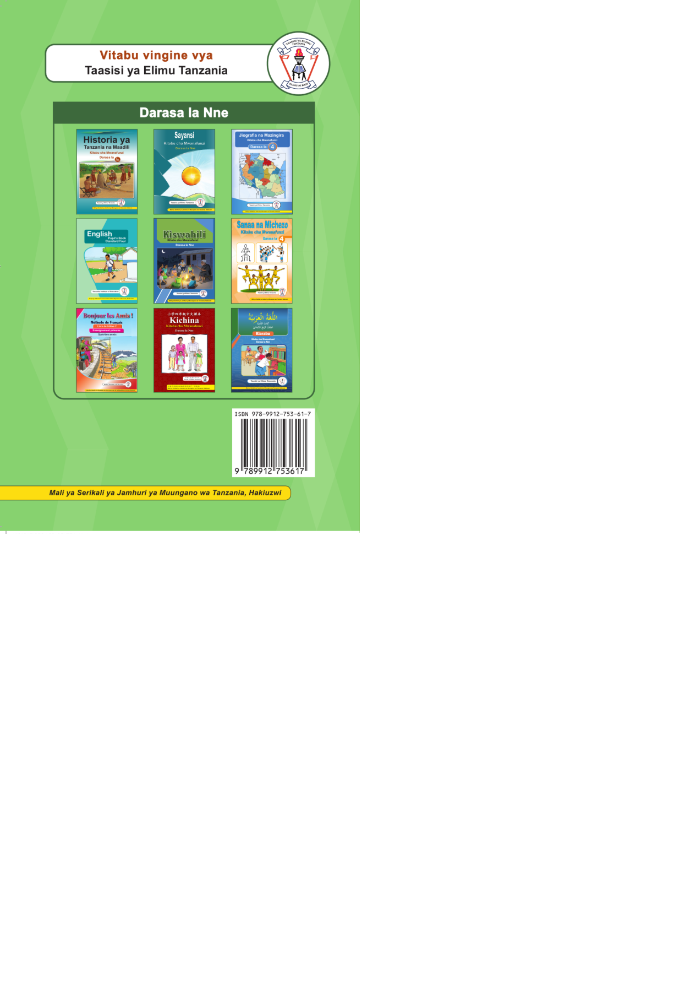

Jalada la nyuma. Juu limeandikwa: Vitabu vingine vya Taasisi ya Elimu Tanzania. Chini yake kuna sehemu yenye kichwa Darasa la Nne, ikionyesha picha za jalada za vitabu tisa vya masomo mbalimbali, vikiwemo Historia ya Tanzania na Maadili, Sayansi, Jiografia na Mazingira, Kiingereza, Kiswahili, Sanaa na Michezo, Kifaransa, Kichina na Kiarabu. Sehemu ya chini kulia ina msimbo pau wenye namba ya Aiesibini: tisa saba nane, tisa tisa moja mbili, saba tano tatu, sita moja, saba. Chini kabisa limeandikwa: Mali ya Serikali ya Jamhuri ya Muungano wa Tanzania, hakiuzwi.
